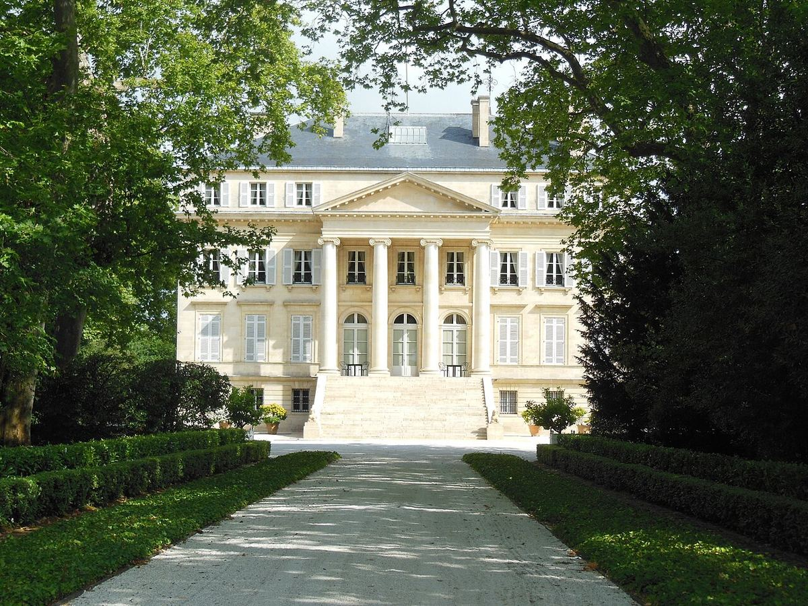

TINTO
Premier Grand Cru Classé de la clasificación de 1855, situado en la denominación Margaux del Médoc y propiedad de la familia Mentzelopoulos desde 1977.

Château Margaux es una de las propiedades más antiguas y célebres del Médoc. Sus vinos ya gozaban de prestigio en el siglo XVIII y, en la clasificación oficial de 1855, fue uno de los cuatro tintos que recibieron la categoría de Premier Grand Cru Classé. El edificio principal, de estilo neopalladiano, se construyó a comienzos del siglo XIX y es una de las imágenes más reconocibles de Burdeos.
En 1977 el empresario André Mentzelopoulos compró la finca e inició una profunda renovación de los viñedos y las bodegas. Tras su muerte en 1980, su hija Corinne Mentzelopoulos tomó el relevo. Durante más de treinta años la dirección técnica estuvo a cargo de Paul Pontallier, fallecido en 2016.
El viñedo se asienta sobre gravas típicas de la denominación Margaux. El tinto principal se basa en el Cabernet Sauvignon, completado con Merlot, Cabernet Franc y Petit Verdot. La finca elabora también un segundo vino, Pavillon Rouge du Château Margaux, y un blanco de Sauvignon Blanc, Pavillon Blanc, que se comercializa con la denominación genérica Bordeaux.
El estilo de Château Margaux se asocia a la elegancia y la finura aromática más que a la potencia, con una estructura que permite largas guardas.
El château y sus bodegas forman un conjunto arquitectónico protegido como monumento histórico.